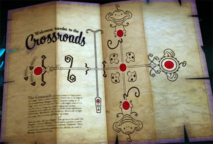

“Lords of Unspecified Treasure in Undiscovered Lands”:
Narrative technique in Escape from Monkey Island
by
Storytelling in video games has been given scant critical attention outside games journalism, but this is undeserved: not only because many games’ story lines are ranked alongside the plots of the most celebrated novels, but also because games offer unique storytelling conditions. Half-life 2 (2005), for example, communicates a detailed backstory despite the protagonist never asking a single question, and with no narrative voice to provide answers outside the protagonist’s own experiences.
Video games, in general, lack narrative voices. Sometimes cutscenes are used, which are often the video game equivalent of a narrator: points at which the creators pause the player’s actions, in order to deliver the information they think is needed. Not all games do this, though, and Ron Gilbert argues against their use, calling them “the cancer of the industry”, because their lack of interactivity pulls away from the game itself.
Other means of storytelling are of course possible: for instance, stories in which information is gradually acquired through exploration. It is this type of storytelling that this short article concerns itself with – not with storytelling that is a sequence of events for the point of advancing action or revealing character details (conveyed through cutscenes), but storytelling that is an end in itself (delivered through exploration).
Adventure games excel at explorative storytelling. The verb interface is the best example of this, with players constructing sentences (“use the monkey with the dishwasher”) whenever they attempt to do anything. Even dialogue, when done through a dialogue “tree”, is an exploration rather than a progressive sequence. Unlike cutscenes, dialogue trees have more room for being merely entertaining, or giving extra (but not strictly necessary) details. These techniques place the player’s actions at the heart of storytelling, so that they, in some sense, become a narrator.
In “On Stories” (1947), C.S. Lewis describes the pleasure in adventure stories, and his comments are directly applicable to adventure games as well. He uses the example of a pirate, arguing that it is not the fact that the pirate is dangerous that makes a pirate story worth reading. If that were the case, the fact that a character was a pirate would be arbitrary; “the ordinary enemy may easily be made just as lethal as a pirate”. Instead, it is the particular type of danger that is important:
“the whole image of the utterly lawless enemy, the men who have cut adrift from all human society and become, as it were, a species of their own – men strangely clad, dark men with earrings, men with a history that they know and we don’t, lords of unspecified treasure in undiscovered lands”.1
This kind of excitement works as an associated idea rather than as something directly conveyed; to explain it clearly removes its mystery, and restricts its scope. If we know what the pirate’s name is, and why he is pirating, and how old he is, he becomes less like the idea of a pirate, and more like a person who has simply turned to crime. The latter would be the goal of a psychological study, but not necessarily an adventure story.
In Escape from Monkey Island (EMI, 2000), Herman Toothrot’s character is fully described in a cutscene that reveals his full name, background, and his relation to other characters. He is no longer the lonely castaway figure, like Crusoe or Gulliver, with the whole image of island survival surrounding him. Instead, he is Horatio T. Marley. There is no longer any mystery about him. On the opposite side of the spectrum we have LeChuck’s backstory, as told in The Secret of Monkey Island (SMI, 1990). Unlike Toothrot in EMI, LeChuck is not described in an information-dump, but through talking to pirates in the Scumm Bar. A few details are given – a jealous lover, a fight, and a vow that transcends death. A world of piracy is glimpsed: desperate, violent, and something not quite human.
Similarly, EMI explains (again, in a cutscene) that the “secret” of Monkey Island is a giant monkey robot lying underground. In the first game, however, the secret of the island itself is a secret, with its undefined location and history. This secret is explored throughout the game (and beyond, on fan forums, for many years). It is not delivered in a narrative chunk like Herman Toothrot’s story in EMI; it is experienced, like the flashbacks of LeChuck in SMI.
It’s not just the way the information is given to the player that makes it less imaginatively exciting: Herman Toothrot’s backstory about the boat race does not have as many “piratey” images associated with it as LeChuck’s does. Likewise, a giant monkey robot will be a disappointing “secret” to many players, whether it is revealed in a cutscene or not. The problem is that cutscenes, and other forms of direct storytelling, limit the extent to which a story is concerned with larger worlds; it becomes, instead, simply a sequence of events told to reach a plot point. As Lewis writes, “the elements which it [cinema] excludes are precisely those which give the untrained mind its only access to the imaginative world. There is death in the camera”.
The Giant Robot could have been gradually explored, with a whole imaginative world associated with it – for example, mysterious ancient machines, so neatly explored in Indiana Jones and the Infernal Machine (1999). The robot would have still worked against the different kind of image that Monkey Island has – that of the magical, mysterious island – but at least it would have been interesting on its own. Instead, the Giant Monkey Robot is used in a different kind of storytelling: one that aims to excite and surprise, without any kind of exploration or development. The information is bluntly given to the player. Exploration of an imaginative world has been jettisoned in favour of a giant robot exploding out of a stone head.
Lewis uses the example of King Solomon’s Mines (1885) to describe different types of excitement. In Haggard’s book, the heroes await suffocation, “entombed in a rock chamber, and surrounded by the mummified kings of that land”. A film adaptation “thought this tame” and added a “subterranean volcanic eruption, and then went one better by adding an earth-quake”. The excitement should be doubled, but instead it is ruined. The situation is more dangerous, but it is the wrong type of danger: what is lost “is the whole sense of the deathly (quite a different thing from simple danger of death)—the cold, the silence, and the surrounding faces of the ancient, the crowned and sceptered, dead”. Likewise, what is lost in EMI is the sense of a mysterious magical island. It may be considered more exciting for a giant monkey robot to explode out of the giant monkey head, but it removes the previous excitement of ancient civilisations untouched by outside influence, and of strange, arcane rituals.

In Tales of Monkey Island (2008), Jake Rodkin placed an inaccessible location in the Crossroads map for Episode 5, stating that “I wanted there to be a place you couldn't go, to keep people wondering... and to screw with them”.
This encourages players to feel that they are only seeing part of a world. It is not just the things we see in the “crossroads” that are exciting, but the whole idea of an afterlife, a world that is bigger than the game itself, which gives an imaginative thrill hard to capture through cutscenes. It is this “promise of infinite possibility” that Tim Schafer identified as a core appeal to adventure games. It is also why J.R.R. Tolkien left blank spaces on his map of Middle-Earth; he thought that The Lord of the Rings (1954-55) had “an attraction like that of viewing far off an unvisited island, or seeing the towers of a distant city gleaming in a sunlit mist. To go there is to destroy the magic, unless new unattainable vistas are again revealed”.
More generally, EMI pulls against the world of pirates in a way that other titles in the series do not, castrating them in a plot about commercialisation, that has nothing to do with swashbuckling on the high seas. The game is about pirates being tamed, but nowhere do we see (as we do in the other games), pirates being pirates.
There is one exception, though – one element that captures the spirit of piracy and adventure; that imaginative exploration of other worlds that C.S. Lewis wrote about. Unlike all other maps featured in the Monkey Island games, the Tri-Island Area map in EMI includes two islands – Spittle and Pinchpenny – that are never visited in the game. You can even see small details, like a pool and a house. They are small, never spoken about, and completely open to the player’s imagination. They are the best locations in the game.
1 C.S. Lewis, “On Stories”, On Stories and Other Essays on Literature (Orlando: Harcourt, 1982), pp. 3-20 (9).